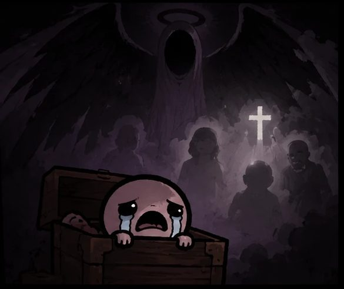

oblivionThe mod menu, mod manager and mod library for
The Binding of Isaac: Repentance+.
SmartScreen may warn because the installer isn't code-signed: More info → Run anyway.

oblivionAltarSetup.exe above.Every mod here passed the safety check and was approved by the admins. Install them in one click from the Altar app's Browse tab; installed mods update themselves.
metadata.xml and main.lua. A release tag (v1.0.0) is best.You need a free GitHub account to submit.
.exe .dll .bat .ps1 .js .py…, or files that are secretly programsos.execute, io.popen, ffi, package.loadlib)load() and the debug library are flagged for the admins to readApprove on GitHub: open the review → Files changed → Review changes → Approve. When enough admins approve, it merges and goes live by itself. Close the review to reject.